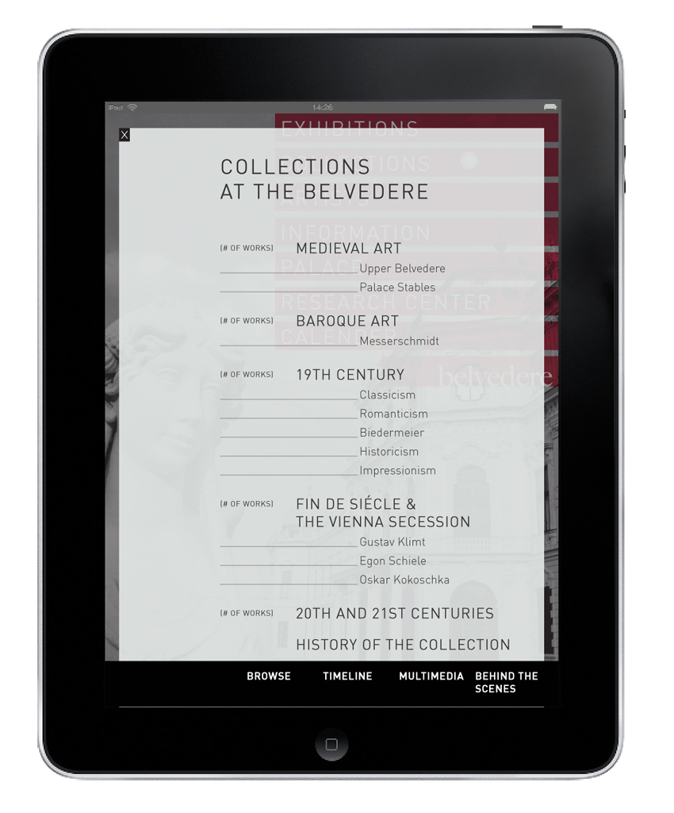
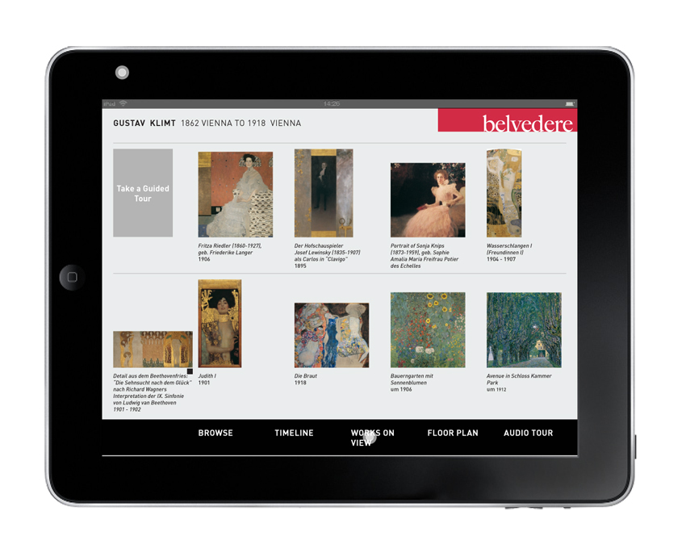
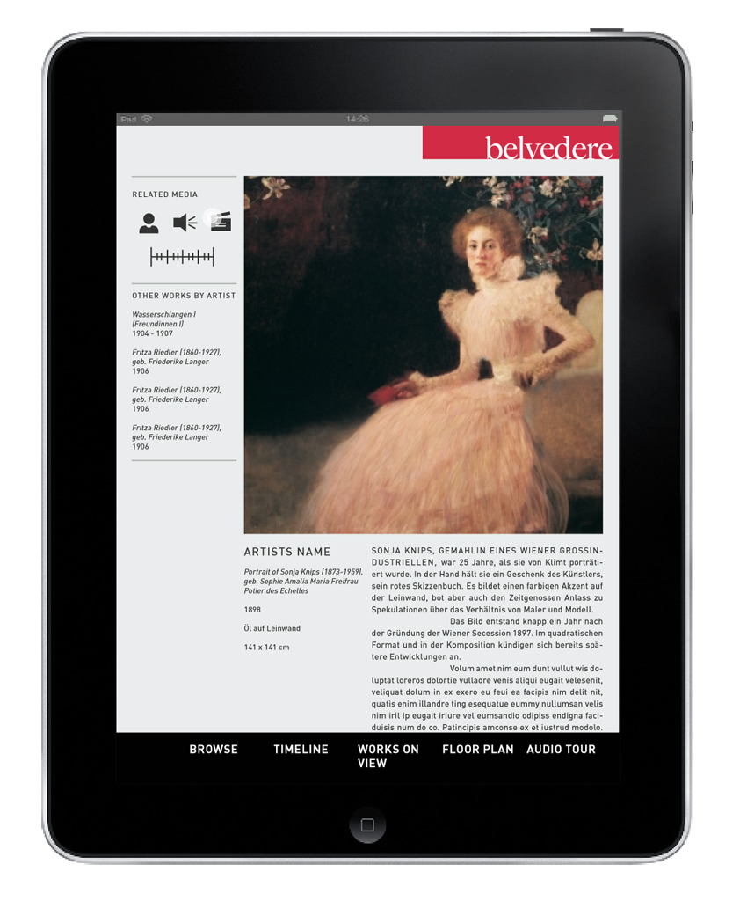
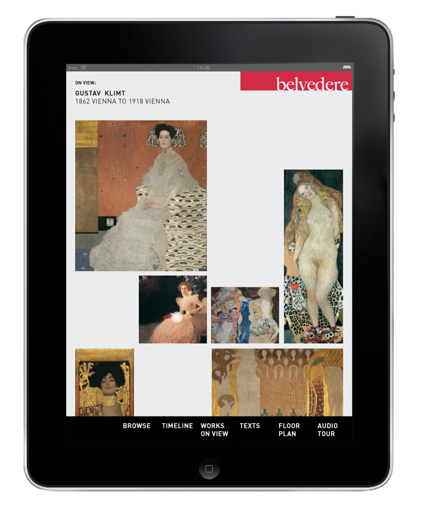
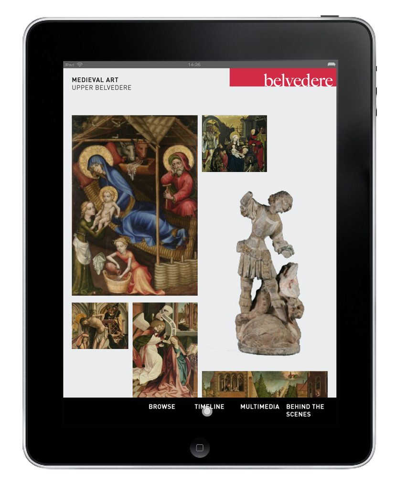
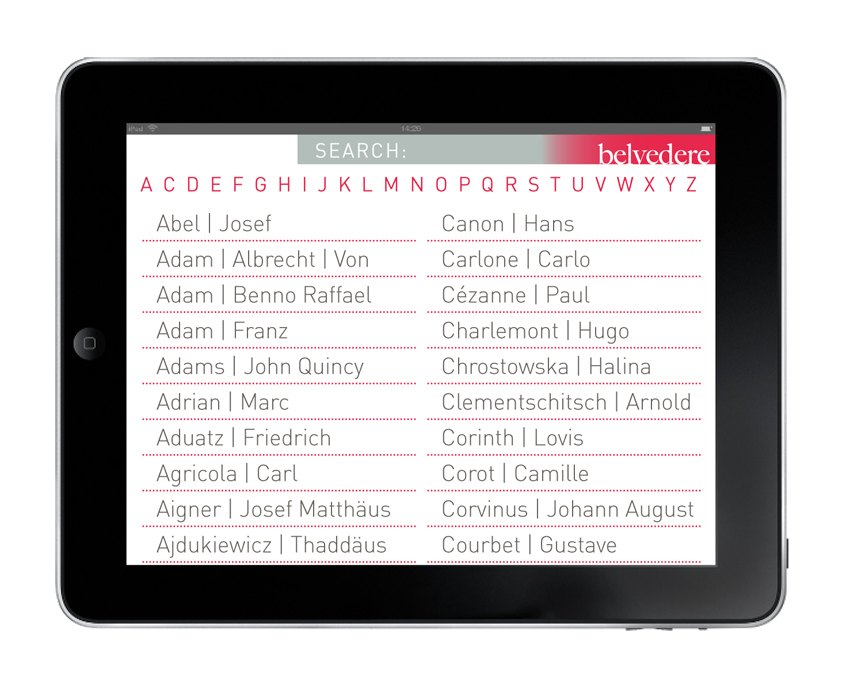

Get in touch.
The Belvedere’s two magnificent palaces, the Upper and Lower Belvedere, were built in the 18th century as the summer residence for the important general Prince Eugene of Savoy (1663-1736). He chose one of the most outstanding Baroque architects Johann Lucas von Hildebrandt (1668-1745).
All current exhibitions are linked to the over all archive for the viewer to obtain more information about art objects if desired.
This project was produced in collaboration with Public New York City.
Sketches for a purposed interactive archive for the Belvedere’s permanent archive. A series of interactive timelines and information systems were developed to enhance the archives accessibility to the outside world. The archive can be navigated through multiple story lines: basic introductory level, an in-depth scholarly level, and on a curatorial level.





